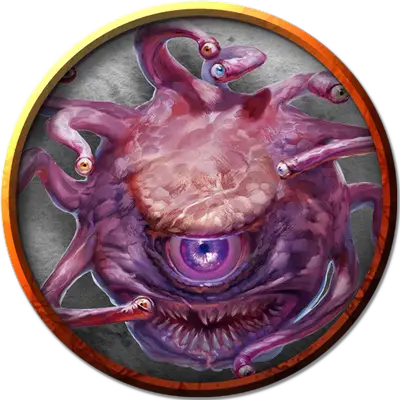

Лортуун
Lorthuun
Большая Аберрация, законно-злая, именной НИП

Класс Доспеха 18 (природный доспех)
Хиты 180 (19к10 + 76)
Скорость 0 футов, летая 20 футов (парит)
| мод | спас | ||
|---|---|---|---|
| СИЛ | 10 | +0 | +0 |
| ЛОВ | 14 | +2 | +2 |
| ТЕЛ | 18 | +4 | +4 |
| мод | спас | ||
|---|---|---|---|
| ИНТ | 17 | +3 | +8 |
| МДР | 15 | +2 | +7 |
| ХАР | 17 | +3 | +8 |
Навыки Восприятие +12
Иммунитет к состояниям сбивание с ног
Чувства тёмное зрение 120 футов, пассивное Восприятие 22
Языки Глубинная речь, Подземный
Опасность 9 (5000 опыта)
Бонус мастерства +4
Особенности
Конус антимагии. Центральный глаз бехолдера создает 150-футовым конусом зону антимагии, как заклинание преграда магии [antimagic field]. В начале каждого своего хода бехолдер решает, в какую сторону направлен конус, и будет ли он активен. Эта зона работает и против лучей из глаз самого бехолдера.
Действия
Укус. Рукопашная атака оружием: +5 к попаданию, досягаемость 5 футов, одна цель. Попадание: Колющий урон 14 (4к6).
Лучи из глаз. Бехолдер испускает три магических луча из глаз, выбранных случайным образом (перебрасывая повторяющиеся результаты), выбирая от одной до трех целей, видимых в пределах 120 футов:
• Очаровывающий луч. Целевое существо должно преуспеть в спасброске Мудрости Сл 16, иначе станет очарованным бехолдером на 1 час, или пока бехолдер не причинит ему вред.
• Парализующий луч. Целевое существо должно преуспеть в спасброске Телосложения Сл 16, иначе станет парализованным на 1 минуту. Цель может повторять этот спасбросок в конце каждого своего хода, оканчивая эффект на себе при успехе.
• Луч страха. Целевое существо должно преуспеть в спасброске Мудрости Сл 16, иначе станет испуганным на 1 минуту. Цель может повторять этот спасбросок в конце каждого своего хода, оканчивая эффект на себе при успехе.
• Замедляющий луч. Целевое существо должно преуспеть в спасброске Ловкости Сл 16. При провале скорость цели на 1 минуту уменьшается вдвое. Кроме того, существо не может совершать реакции, и может в свой ход совершать либо действие, либо бонусное действие, но не то и другое. Существо может повторять этот спасбросок в конце каждого своего хода, оканчивая эффект на себе при успехе.
• Луч бессилия. Целевое существо должно совершить спасбросок Телосложения Сл 16, получая урон некротической энергией 36 (8к8) при провале, или половину этого урона при успехе.
• Телекинетический луч. Если цель — существо, она должна преуспеть в спасброске Силы Сл 16, иначе бехолдер переместит её на расстояние до 30 футов в любом направлении. Цель опутана телекинетической хваткой луча до начала следующего хода бехолдера, либо пока бехолдер не станет недееспособным. Если цель — предмет, весящий не больше 300 фунтов, никем не несомый и не носимый, он перемещается в любом направлении на расстояние до 30 футов. Бехолдер может этим лучом совершать аккуратные действия, например, манипулировать простым инструментом, открывать дверь или контейнеры.
Легендарные действия
Бехолдер может совершить 3 легендарных действия, используя описанный ниже Луч из глаз. За один раз можно использовать только одно легендарное действие, и только в конце хода другого существа. Бехолдер восстанавливает использованные легендарные действия в начале своего хода.
Луч из глаз. Бехолдер использует один случайным образом выбранный луч из глаз.
Логово
Центр логова бехолдера - это, как правило, просторная пещера с высокими потолками, где он может атаковать, не рискуя столкнуться в ближнем бою с врагом. У бехолдера, обнаруженного в логове, показатель опасности 14 (11500 опыта).
Действия логова
При сражении в своем логове, бехолдер может воззвать к окружающей магии и использовать действие логова. При значении инициативы «20» (в случае ничьей проигрывает всем конкурентам) бехолдер может совершить действие логова, чтобы вызвать один из следующих эффектов:
• Квадратная площадь 50 × 50 футов, находящаяся в пределах 120 футов от бехолдера, становится вязкой; это зона — труднопроходимая местность, до значения инициативы 20 в следующем раунде.
• Стены в пределах 120 футов от бехолдера обрастают хватательными придатками до значения инициативы 20 через два раунда. Все существа по выбору бехолдера, начинающие свой ход в пределах 10 футов от такой стены, должно преуспеть в спасброске Ловкости Сл 15, или будут схвачены. Для высвобождения необходима успешная проверка Силы (Атлетика) или Ловкости (Акробатика) Сл 15.
• На твердой поверхности в пределах 60 футов от бехолдера открывается глаз, испускающий случайным образом выбранный луч из глаз этого бехолдера в цель, видимую бехолдером на его выбор. После этого глаз закрывается и исчезает.
Бехолдер не может повторять эффект, пока все эффекты не будут использованы, и он не может использовать один эффект два раунда подряд.
Местные эффекты
Местность, в которой находится логово бехолдера, искажается сверхъестественной природой существа. Обычно это один или несколько из следующих эффектов:
• Существа в пределах 1 мили от логова бехолдера иногда ощущают, что за ними наблюдают, хотя рядом никого нет.
• Когда бехолдер спит, в пределах 1 мили от его логова происходят незначительные искажения, исчезающие через 24 часа. Отметки на стенах пещер могут едва заметно измениться, мрачные безделушки могут посвиться там, где их не было, безобидная слизь может покрыть статую, и так далее. Эти эффекты применяются только к естественным поверхностям и немагическим объектам, которые ни на кого не надеты.
Если бехолдер умирает, эти эффекты пропадают в течение 1к10 дней.
Описание
«КАЖДЫЙ БЕХОЛДЕР ДУМАЕТ, ЧТО ОН — ОЛИЦЕТВОРЕНИЕ ВСЕГО ВИДА БЕХОЛДЕРОВ, И ЕДИНСТВЕННОЕ, ЧЕГО ОН БОИТСЯ, ТАК ЭТО МЫСЛИ О ТОМ, ЧТО ОН ОШИБАЕТСЯ»
— ВАЛКАР АЙРОНФЕЛ, ДВАРФСКИЙ МУДРЕЦ
Одного взгляда на бехолдера достаточно, чтобы понять всю его отвратительную и чужеродную природу. Эти агрессивные, ненавидящие всех и жадные аберрации считают всех остальных существ низшими, и либо играют ими, либо уничтожают их.
Шаровидное тело бехолдера все время левитирует, его большой выпуклый глаз расположен над широкой пастью, полной острых зубов, глаза поменьше располагаться на стебельках, создавая эффект короны. Они все время изгибаются и крутятся, держа противников в поле зрения. Когда бехолдер спит, он закрывает свой центральный глаз, но оставляет мелкие глаза открытыми, готовыми послать ему сигнал опасности.
Ксенофобы изоляционисты. Враги повсюду, по крайне мере, в это верит каждый бехолдер. Они убеждены, что другие существа, мелкие, грубые и мерзкие, завидуют их великолепию и магическим силам. Бехолдеры всегда подозревают других в составлении заговоров против них, даже когда вокруг никого нет.
Презрение, которое бехолдеры испытывают по отношению к другим существам, не исключает презрения к себе подобным. Каждый бехолдер считает, что его форма идеальная, а любое отклонение от неё — это недостаток расовой чистоты. Бехолдеры сильно отличаются друг от друга, поэтому конфликт между ними неизбежен. Некоторые бехолдеры защищены перекрывающимися хитиновыми пластинами. У других шкуры гладкие. У кого-то стебельки с глазами извиваются как щупальца, у других они похожи на глаза раков. Даже незначительные различия в окрасе шкуры могут сделать из двух бехолдеров врагов на всю жизнь.
Око тиран. Некоторые бехолдеры превращают свои ксенофобские наклонности в настоящий деспотизм. Вместо жизни в изоляции, они порабощают других существ, основывая и контролируя обширные империи. Такие бехолдеры иногда захватывают себе области внутри города или под ним, командуя целыми агентурными сетями.
Отчужденные логова. Из-за отказа делить территорию с другими, большинство бехолдеров удаляться в холодные холмы, заброшенные руины и глубокие пещеры. Свое логово бехолдер обычно вырезает лучом расщепления из своего глаза, соединяя вертикальными проходами камеры, расположенные друг над другом. Такое расположение позволяет бехолдеру спокойно перемещаться, одновременно затрудняя перемещения проникших в логово врагов. Если вдруг злоумышленники проникнут в логово, высокие потолки позволят бехолдеру левитировать наверху, пока его враги находятся на полу.
Комнаты в логове бехолдера в полной мере отражают высокомерие этого существа. Они украшены трофеями, полученными в битвах, в том числе и окаменевшими искателями приключений, застывшими в последний момент с испуганными лицами, частичками других бехолдеров, и магическими вещами, полученными от могущественных врагов. Бехолдеры сами оценивают стоимость своих вещей, и по собственной воле редко расстанутся с сокровищами.